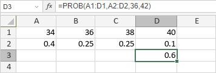

PROB funkcija
PROB funkcija je jedna od statističkih funkcija. Koristi se za vraćanje verovatnoće da su vrednosti u opsegu između donje i gornje granice.
Sintaksa
PROB(x_range, prob_range, [lower_limit], [upper_limit])
PROB funkcija ima sledeće argumente:
| Argument | Opis |
|---|---|
| x_range | Izabrani opseg ćelija koji sadrži numeričke vrednosti kojima želite da pridružite verovatnoće. |
| prob_range | Skup verovatnoća povezanih sa vrednostima u x_range, izabrani opseg ćelija koji sadrži numeričke vrednosti veće od 0, ali manje od 1. Zbir vrednosti u prob_range treba da bude jednak 1, u suprotnom će funkcija vratiti grešku #NUM!. |
| lower_limit | Donja granica vrednosti, numerička vrednost uneta ručno ili sadržana u ćeliji na koju se pozivate. |
| upper_limit | Gornja granica vrednosti, numerička vrednost uneta ručno ili sadržana u ćeliji na koju se pozivate. Ovo je opcioni argument. Ako se izostavi, funkcija će vratiti verovatnoću jednaku lower_limit. |
Napomene
x_range treba da sadrži isti broj elemenata kao prob_range.
Kako primeniti PROB funkciju.
Primeri
Slika ispod prikazuje rezultat koji vraća PROB funkcija.
